MAPTRANSITION - Transition pixels mapping.
Contents
Description
Criterion for mapping transition ('ramp') pixels in natural (possibly multichannel) images. Given the general low pass filtering nature of imaging systems, ideal step edges are actually transformed (blurred) into ramp discontinuities. Ramp pixels are sometimes called stairs, transition regions, or simply transitions because they establish a path between nearby bright and dark regions.
Syntax
[map,slextr] = MAPTRANSITION(I); [map,slextr] = MAPTRANSITION(I, method); [map,slextr] = MAPTRANSITION(I, method, 'Property', propertyvalue, ...);
Inputs
I : depending on the 'method' (see below), this input matrix can be:
- the original image with size (X,Y,C) when the method 'morph' is invoked,
- the local lower, medium and hight intensity indices (see function, RAMPSHARP) with size (X*Y,3,C) computed over an image with size (X,Y,C), when either of the 'indice' method is invoked,
where C>1 when the considered image is multichannel.
method : optional string setting the approach used for defining the transition (ramp) pixels in the image; it is either:
- 'morph' when the adopted definition is the one presented in [SG09],
- 'indice' when the adopted definition is derived from that presented in [Leu00], with possibly stronger constraints.
Property [propertyname propertyvalues]
'se' : structuring element used for looking for extrema and transitions; must be of class strel; default: se=strel('square',3).
'nhood' : optional string defining the shape of neighbourhood used for defining the structuring element (see function STREL) when it has not been passed as an argument; it can be either: 'disk', 'square', 'diamond', 'line' or 'octagon'; incompatible with 'se'.
'k' : size of the neighbourhood; it is either a scalar or a (2,1) vector, depending on the shape of the structuring element as defined by 'nhood'; incompatible with 'se'.
Outputs
Tmap : transition map of the input image, where the maximal amplitude of the grey level difference between neighbours of each transition pixel and over all channels is represented; it is obtained by setting non transition pixels to 0 and transition pixels to the pointwise maximum of the morphological gradient computed for each channel.
slextr : local extremum map summing the outputs of the extremum indicator function applied to each channel of the input image; the values in slextr represent the local extrema of order, ie. slextr(p)=n on those pixels p of the image that are local extrema in at least n channels of the input image.
Remark
In the absence of the Image Processing Toolbox, a simple version of this function is available, where the only possible neighbourhoods are 3x3 structuring elements with 4 or 8 connectivity (though, default SE is also the one used in [SG09]: se=strel('square',3)). The function EXTREMA3X3 is called in that case.
References
[Leu00] J.G. Leu: "Edge sharpening through ramd width reduction", Image and Vision Computing, 18:501-514, 2000. http://www.sciencedirect.com/science/article/pii/S0262885699000414
[SG09] P. Soille and J. Grazzini: "Constrained connectivity and transition regions", Proc. of ISMM, LNCS 5720, pp. 59-69, Springer-Verlag, 2009. http://www.springerlink.com/content/g6h8mk8447041532/
[GS10] J. Grazzini and P. Soille: "Iterative ramp sharpening for structure/signature-preserving simplification of images", Proc. ICPR, pp. 4586-4589, 2010. http://ieeexplore.ieee.org/xpls/abs_all.jsp?arnumber=5597348
[Soille11] P. Soille: "Preventing chaining through transitions while favouring it within homogeneous regions", Proc. of ISMM, LNCS 6671, pp. 96-107, Springer-Verlag, 2011. http://www.springerlink.com/content/r62m9612j786207l/
Function implementation
function [Tmap,varargout] = maptransition(I,varargin)
narginchk(1, 12); % 'struct' nargoutchk(1, 2); % 'struct'
parsing parameters
if ~isnumeric(I) error('maptransition:inputerror','a matrix is required in input'); end p = createParser('MAPTRANSITION'); % create an instance of the inputParser class. p.addOptional('method', 'morph', @(x)ischar(x) && ... any(strcmpi(x,{'morph','indice'}))); p.addParamValue('se', [], @(x)isa(x,'strel')); p.addParamValue('nhood', 'square', @(x)ischar(x) && ... any(strcmp(x,{'disk','square','diamond','line','octagon'}))); p.addParamValue('k', 3, @(x)isnumeric(x) && all(x>0) && length(x)<=2); p.addParamValue('const', 'weak', @(x) ischar(x) && ... any(strcmp(x,{'weak','strong'}))); p.addParamValue('comp', '<', @(x) ischar(x) && any(strcmp(x,{'<','>'}))); % parse and validate all input arguments p.parse(varargin{:}); p = getvarParser(p); % check if strcmp(p.nhood,'line') && length(p.k)<2 error(['2 parameters need to be passed for building a SE '... 'with shape ' p.nhood ' - use field k']); end
internal variables
if isempty(ver('images')) % in the absence of the IP toolbox, define (force) a simple SE reduced % to a 3x3 neighbourhood with connectivity 4 or 8. if ~isempty(p.se) error('unknown SE parameter in the absence of IP toolbox'); elseif ~any(strcmp(p.nhood,{'diamond','disk','square'})) error('only ''diamond'', ''disk'' and ''square'' available for parameter NHOOD'); elseif p.k~=3 error('only size=3 available for parameter K'); end p.se = p.nhood; else % when the IP toolbox is present, define the structuring element as desired. if isempty(p.se) if length(p.k)==1, p.se = strel(p.nhood,p.k); else p.se = strel(p.nhood,p.k(1),p.k(2)); end end end % size and dimension of the input image C = size(I,3); switch p.method case 'morph' [x y] = size(I(:,:,1)); xy = x*y; case 'indice' xy = size(I(:,1,1)); end % create the output variables % maps for multichannel transitions/extrema Slextr = false(xy,1); % zeros(x,y); % smap = repmat(true,x,y); Tmap = zeros([xy,1]); if strcmp(p.const,'strong') Tmap2 = true([xy,1]); end
main computation: proceed channel by channel
for j = 1:C % compute the map over a single channel if strcmp(p.method,'morph')
compute the transition map (values and positions) for the current channel
[gmap, imap] = maptransition_morph(I(:,:,j),p.se);
a pixel p is a transition pixel if and only if, in all channels of the input image, it has at least one lower and one higher neighbours:
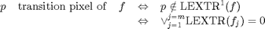
ie, a pixel of a multichannel is a transition pixel if and only if it is a transition pixel in each individual channel.
Tmap(imap) = max(gmap,Tmap(imap));
when considering a multichannel image 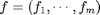, we define the operator 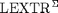 summing the outputs of the indicator function 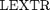 (see below) applied to each channel 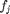 of the input image:
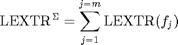
we then define the local extrema of order n as those pixels of the image that are local extrema in at least n channels of the input image. They are denoted by 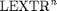:
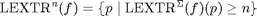
Slextr = Slextr - imap; % considering that imap=~lextr
elseif strcmp(p.method,'indice') imap = maptransition_indice(I(:,:,j),p.comp); % for each pixel, we first check if it exists at least one band where % its IH is strictly greater than its IM and its IM is greater than % its IL: % IH[i] > IM[i] > IL[i] for at least one i Tmap = Tmap | imap; % note that in the case C=1, the previous condition is still % equivalent to that proposed in [Leu00] if strcmp(p.const,'strong') % in the case 'strong': we then further verify that there is no % band where its IH is lower than its IM or its IM is lower than % its IL, ie.: % IH[j] >= IM[j] >= IL[j] for all j<>i imap2 = maptransition_indice(I(:,:,j),[p.comp '=']); Tmap2 = Tmap2 & imap2; end end end
update
if strcmp(p.method,'morph')
the calculation of the maximal amplitude of the grey level difference between neighbours of each transition pixel and over all channels leads to the notion of transition map for multichannel image. Formally, it is denoted by TMAP and obtained by setting non transition pixels to 0 and transition pixels to the pointwise maximum of the morphological gradient computed for each channel: 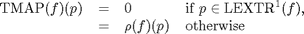
Tmap(Slextr>=1) = false;
For an ideal image with regions of constant intensity levels separated by ideal step edges (and assuming that one pixel thick regions must correspond to local extrema) the transition map is equal to zero everywhere; this would not be the case if regional instead of local extrema would have been considered.
% reshape the output matrice Slextr = reshape(Slextr,x,y); if nargout>=2 varargout{1} = Slextr; end
elseif strcmp(p.method,'indice') && strcmp(p.const,'strong') Tmap = Tmap & Tmap2; end % reshape the output map if strcmp(p.method, 'morph') Tmap = reshape(Tmap,x,y); end
end % end of maptransition
Subfunctions
MAPTRANSITION_MORPH - Define the set of local extrema: a pixel
of a grey level image f is a local extremum if and only if all
its neighbours have a value either greater or lower than that of the
considered pixel; ie: a pixel is a local extremum if and only if the
(pointwise) minimum between the gradients by erosion  and dilation 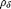
of f at position p is equal to 0:
and dilation 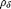
of f at position p is equal to 0:
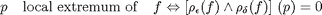
%-------------------------------------------------------------------------- function [gmap,imap] = maptransition_morph(I,se)
if isempty(ver('images')) if any(strcmp(se,{'diamond','disk'})), nconn=4; elseif strcmp(se,'square'), nconn=8; end gerod = I - extrema3x3(I, @min, nconn); gdil = extrema3x3(I, @max, nconn) - I; else gerod = I - imerode(I,se); gdil = imdilate(I,se) - I; end
the local extremum map LEXTR of a grey level image f is simply obtained by thresholding the pointwise minimum of its gradients by erosion and dilation for all values equal to 0:
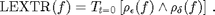
% the LEXTR map corresponds to the indicator function returning 1 for local % extrema pixels and 0 otherwise. lextr = min(gerod(:),gdil(:)) == 0; %figure, imagesc(reshape(lextr,size(I))), axis image, colormap gray
we define transition pixels of a grey level image f as those image pixels that are not local extrema:
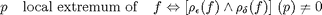
imap = ~lextr;
%figure, imagesc(reshape(imap,size(I))), axis image, colormap gray
the value of the morphological gradient of a transition pixel indicates the largest intensity jump that occurs when crossing this pixel. It corresponds to the intensity difference between its highest and lowest neighbours. we define the transition map the grey tone image obtained by setting each transition pixel to the value of this intensity difference:
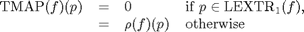
where 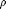 denotes the morphological gradient operator (i.e., sum of the gradients by erosion and dilation): 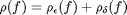.
gmap = (gerod(imap) + gdil(imap)) / 2; %gmap = (gerod + gdil) / 2; %gmap(lextr) = 0; %figure, imagesc(gmap), axis image, colormap gray
end % end of maptransition_morph
MAPTRANSITION_INDICE - Compare the column elements of I taken in increasing order (I(:,1) compared to I(:,2), I(:,2) compared to I(:,3),...) where the comparison function is given by the string strordre.
%-------------------------------------------------------------------------- function imap = maptransition_indice(I, strordre) ncheck = size(I,2); imap = ones(size(I,1),1); % check the ordering (comparison) function ordre = str2func(strordre); for i=1:ncheck-1 % imap = eval(['imap & I(:,i)' ordre 'I(:,i+1)']); imap = imap & ordre(I(:,i),I(:,i+1)); % example: if ordre='<' and I of size 3, this expresion is then % equivalent to: % imap = I(:,1)<I(:,2) & I(:,2)<I(:3) end % if ordre==0 % ordre strict % imap = I(:,H)>I(:,M) & I(:,M)>I(:,L); % else % imap = I(:,H)>=I(:,M) & I(:,M)>=I(:,L); % end end % end of maptransition_indice